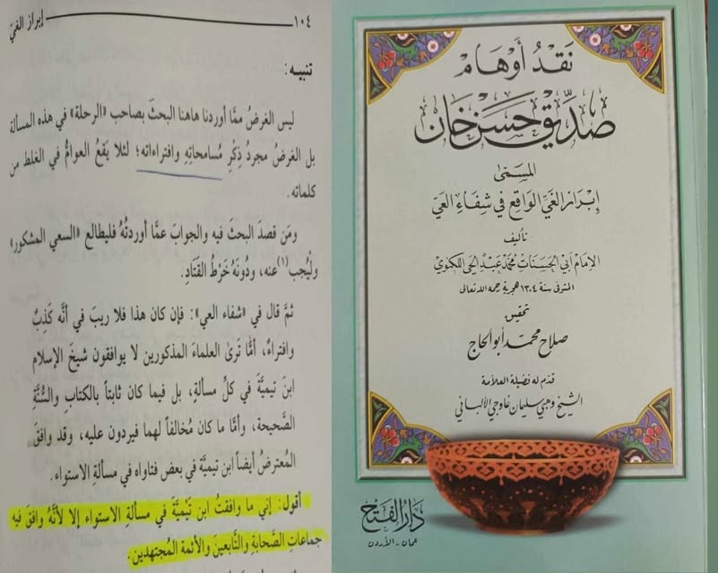

ক্ষণজন্মা হানাফি বিখ্যাত ইমাম আব্দুল হাই লাক্ষ্মৌভি রাহ: তিনি ইস্তিওয়া'র মাসআলায়…
৪ জুলাই, ২০২৩
ক্ষণজন্মা হানাফি বিখ্যাত ইমাম আব্দুল হাই লাক্ষ্মৌভি রাহ: তিনি ইস্তিওয়া'র মাসআলায় শাইখুল ইসলাম ইবনু তাইমিয়া রাহিমাহুল্লাহর সঙ্গে সহমত পোষণ করতেন। এ নিয়ে নওয়াব সিদ্দিক হাসান খাঁন রাহ. যখন আপত্তি তুলেন। তখন জবাবে লাক্ষ্মৌভি রাহিমাহুল্লাহ লেখেন—
أقول: إني ما وافقتُ ابن تَيْمِيَّةَ فى مسألةِ الاستواء إلا لأنَّه وافق فيه جماعاتِ الصَّحابة والتابعين والأئمة المجتهدين.
‘আমি ইবনু তাইমিয়ার সঙ্গে ইস্তিওয়া'র মাসআলায় একমত হয়েছি , কেননা তিনি এ ক্ষেত্রে সাহাবা, তাবেইন ও আয়িম্মায়ে মুজতাহিদিনের জামাআতের (ব্যাখ্যার) অনুকূল ছিলেন।’ [ইবরাযুল গাই-১০৪]
এ কারণেই আমি দৃঢ়তার সঙ্গে সবসময় বলি, শাইখুল ইসলাম ইবনু তাইমিয়া (রাহিমাহুল্লাহ) আকিদাহর নতুন কিছু আবিষ্কার করেন নি; বরং সালাফে সালেহিন থেকে যে আকিদাহ বর্ণিত হয়েছে, তিনি সেগুলোকেই ধারণ করেছেন এবং আকলি ও নকলি দলিলের মাধ্যমে তা শক্তিশালী প্রমাণ করেছেন মাত্র। এতে যদি ইবনু তাইমিয়া দেহবাদি হয়, তাহলে হানাফি কিংবদন্তী ইমাম ও মুজতাহিদ আব্দুল হাই লাক্ষ্মৌভি-ও কি দেহবাদি ছিলেন?!
